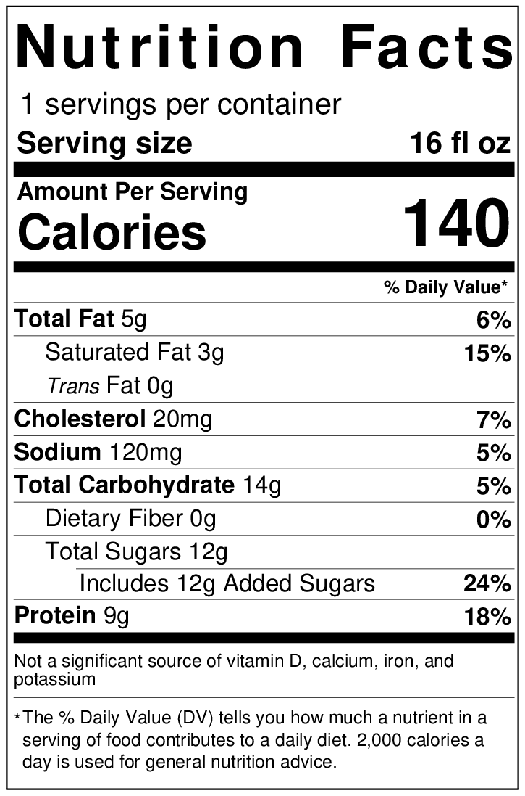

Honestly, this one should be named the americano instead. Cappuccinos are much like americanos, except instead of adding water, we add cream. This is immediately obvious from the nutrition facts, and you may notice that the cappuccino has almost 10 times as many calories as an americano. Enjoy your obesity.
I have been informed that I am legally required to include nutrition facts, so here they are.
 {% endblock %}